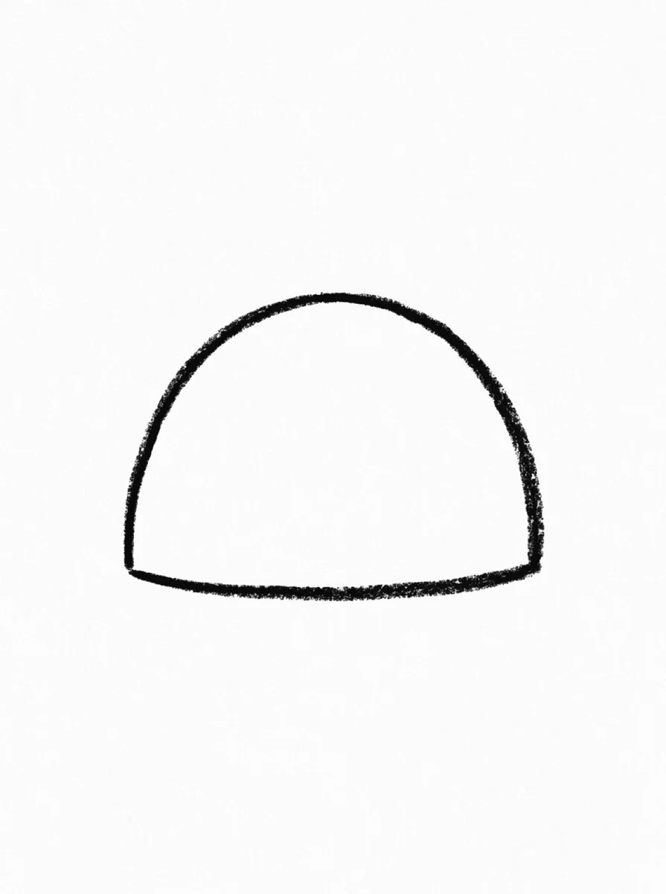
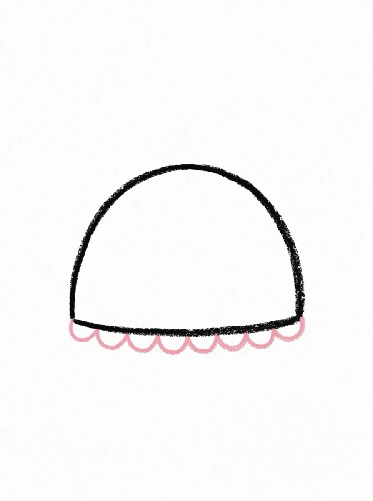
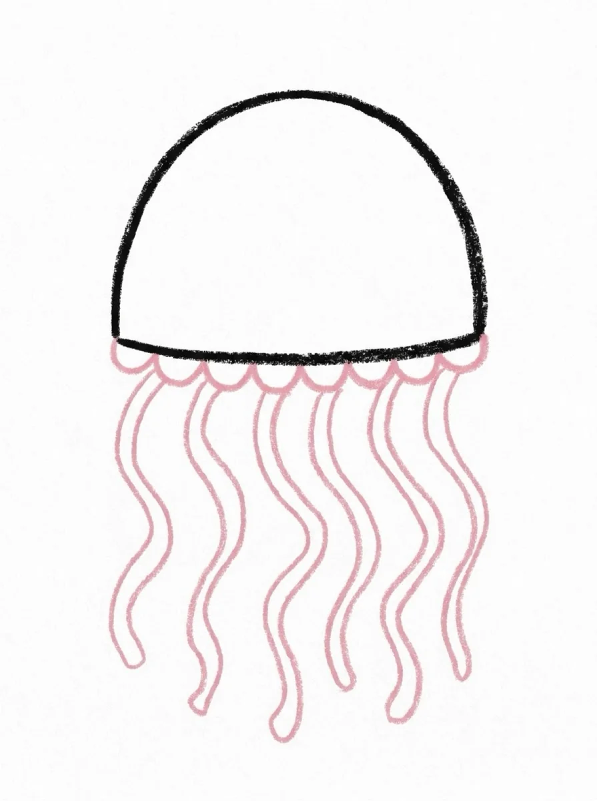
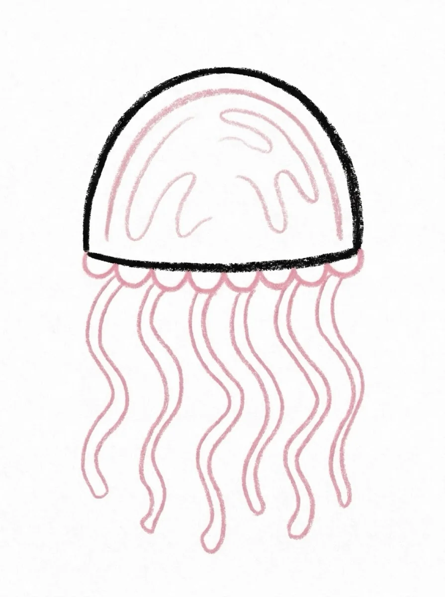
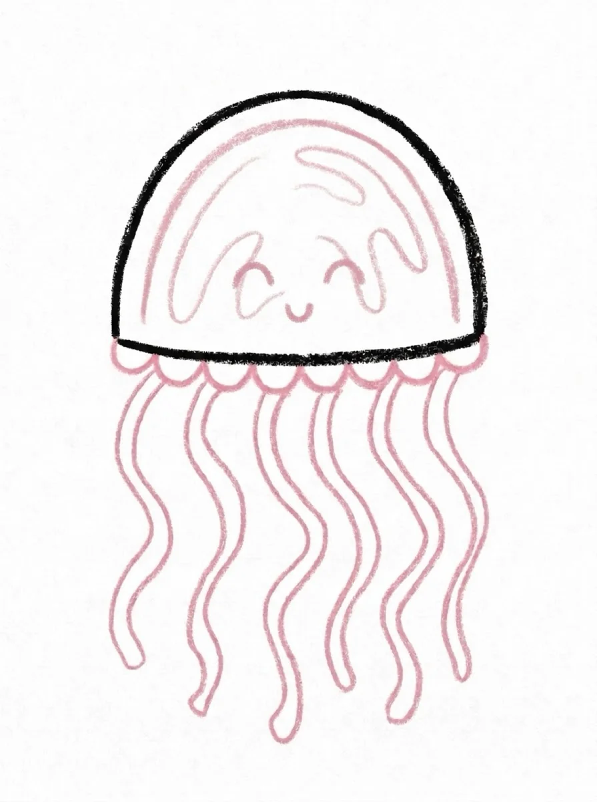
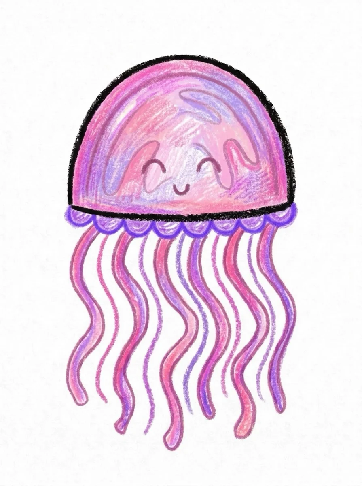

Jellyfish Drawing for Kids How to Draw a Jellyfish in 6 Easy Steps
Jellyfish are the dreamiest thing to draw — all curves, no straight lines allowed. The tentacles are just wavy ribbons, and every wobble makes them look more ocean-like. This is the drawing that teaches kids that wavy is wonderful.
Quick Answer
This free step-by-step tutorial shows kids how to draw a jellyfish in six easy steps: a dome bell, a wavy bottom edge, flowy tentacles, inner details, a cute face, and color. Download the printable PDF, grab crayons, and follow along together. Made for ages 4 and up — no signup needed, just print and draw.
At a Glance
- Subject: How to draw a jellyfish
- Ages: 3+
- Steps: 6 steps
- Time: ~10 min
- Difficulty: Easy
- Supplies: Paper, crayons
✏️ How to Draw a Jellyfish: Step by Step
One step per box — draw each new part in a different color so kids can see exactly what changed.
Step 1: The Dome Bell

Draw a half-circle dome, like an upside-down bowl or a gumdrop. This is the jellyfish's bell.
Step 2: The Wavy Edge

Draw a wavy scalloped line across the bottom of the dome — up and down, up and down.
Step 3: Flowy Tentacles

Draw 5 or 6 long wavy ribbons hanging down from the scalloped edge.
Step 4: Inner Details

Draw a few curved lines inside the dome, like the jellyfish's inner glow.
Step 5: The Cute Face

Add two happy closed eyes (curved lines) and a tiny smile on the dome.
Step 6: Color It In

Color it pink, purple, or any dreamy color — jellyfish glow in the deep sea!
📊 Jellyfish Drawing by Age
Every age can join in — just adjust the job.
| Age | What they can do | Tip |
|---|---|---|
| 3–4 | Trace the dome and draw wavy tentacles | Wavy lines are perfect for this age — no straight lines needed |
| 4–5 | Draw the dome, edge, and tentacles with help | Count the tentacles together — five is a good number |
| 6+ | Draw the whole jellyfish solo | Challenge: draw three jellyfish at different sizes, like a family |
🖨️ Download Your Free Jellyfish Drawing Printable
The printable lays out all 6 steps one per box, big enough for little hands — kids draw right alongside each step.
⬇️ Download Free Printable 🖨️ Print🎁 Free printable for ages 3+
More Drawing Pages
Tap any picture to open its tutorial and draw along step by step.
Deep Sea Glow Party
Draw your jellyfish on dark blue paper with light-colored crayons — the colors pop like bioluminescence. Add tiny fish silhouettes and bubbles rising. Drawing on dark paper flips everything kids know about coloring, and the 'glowing' effect gets genuine gasps.
What You'll Need to Draw a Jellyfish
Pink, purple, or blue for the bell — jellyfish are beautifully translucent, so light coloring works better than heavy pressing. The tentacles should be wavy, flowing lines in a lighter shade. White paper is fine, but dark blue paper with light-colored jellyfish looks absolutely stunning — worth trying.
What They're Learning
Jellyfish are all about wavy lines — the tentacles can't be straight or they look wrong, which forces kids to embrace curves. The dome bell (half a circle) is a new shape variant. Varying tentacle lengths (some long, some short) teaches natural variation vs rigid uniformity. It's also a great lesson that some animals are just weird shapes, and that's okay.
Make It Yours
Draw a whole jellyfish bloom (that's what a group is called — kids love that fact) with different colors and sizes. Add bubbles rising, small fish swimming nearby, or a deep-sea background that gets darker toward the bottom. A glowing jellyfish with radiating lines looks bioluminescent. Try tentacles with little dots or stripes for extra detail.
🛒 Our Favorite Drawing Supplies
These are the supplies we reach for in our own home — washable (because kids), quality paper, and enough colors to avoid fights.
As an Amazon Associate, MomYouNeedThis earns from qualifying purchases — at no extra cost to you.
💡 Jellyfish Drawing Tips for Parents
This is the most forgiving tutorial in the family — all curves, no straight lines — and the FAQ's own line is the coaching headline: the wobblier the better. Say it before step one, especially to a child who thinks wobbly means wrong. Count the tentacles together as they land; the age table settles on five as a good number.
Coach a light hand for the bell: jellyfish are translucent, and What You'll Need points out that light coloring works better than heavy pressing. Save the dark-blue-paper glow version from the Deep Sea Glow Party section for a second sitting rather than the first attempt — it's the reward version, and kids who've already landed one jellyfish will make it glow.
📚 Keep Exploring
- ✏️ All 76 Drawing Tutorials 76 free step-by-step drawing tutorials for kids.
- 🐾 Animal Coloring Free printable animal coloring pages for little learners.
- ✏️ Drawing Practice Free printable drawing pre-writing worksheet for toddlers.
❓ Jellyfish Drawing FAQs
What is the easiest way for a kid to draw a jellyfish?
Draw a half-circle dome and give it a wavy scalloped bottom edge. Hang five or six wavy ribbon tentacles from the edge, add inner glow curves, and finish with happy closed eyes. All curves, no straight lines — the wobblier the better.
What age can kids start learning to draw a jellyfish?
Most kids can draw the dome and wavy tentacles around age 4 with help, and the full jellyfish solo by 5 or 6. This is one of the most forgiving drawings — wavy lines are the whole point.
What supplies do we need to draw a jellyfish?
Paper and crayons or markers — pinks and purples are dreamy. Try light crayons on dark blue paper for a glowing deep-sea effect. The free printable PDF lays out all six steps one per box.
Is the jellyfish drawing printable really free?
Yes — every printable on MomYouNeedThis is 100% free to download and print. No signup, no payment, just tap the download button.
How do I print the jellyfish drawing tutorial?
Open the PDF and print at 100% scale (not 'fit to page') so the drawing boxes stay big enough for little hands. The printable is designed to stay large — never shrunk to force a fit. The print button opens the full-size page in a new tab if you prefer to print from there.